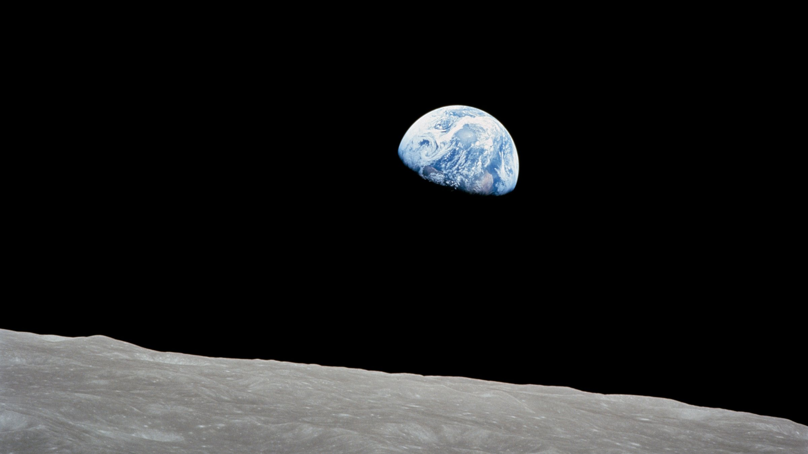
Hardware left in space that still answers.
The challenge is to tell school-age space fans its story.
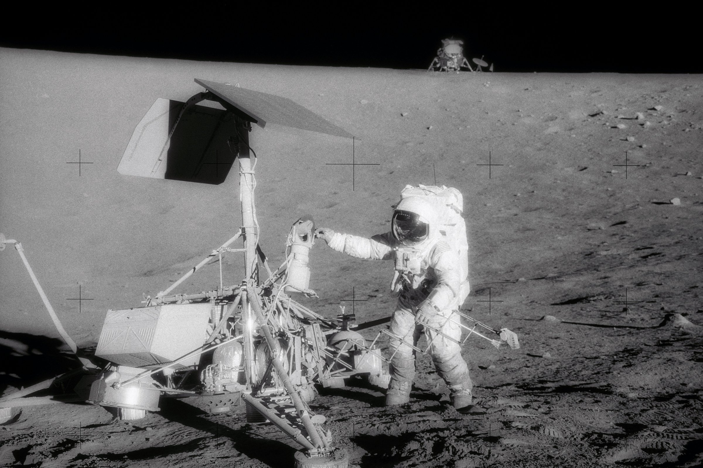
1967Surveyor 3
Last contact 1967
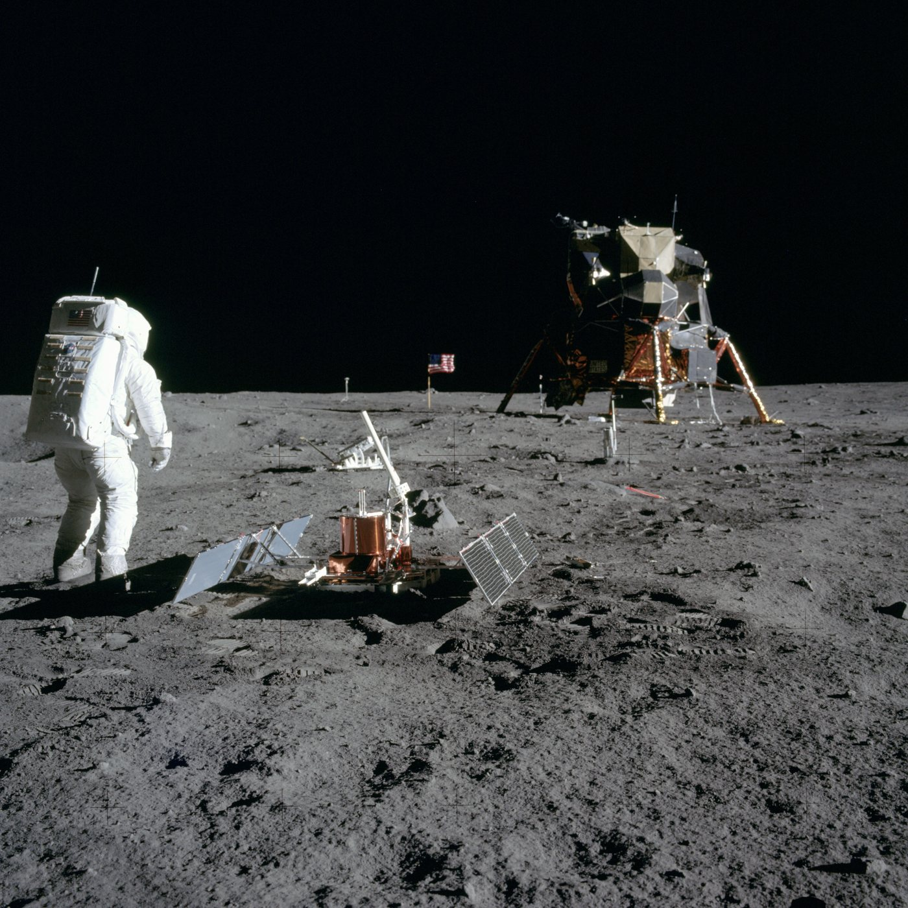
1969Apollo 11 reflector
Active
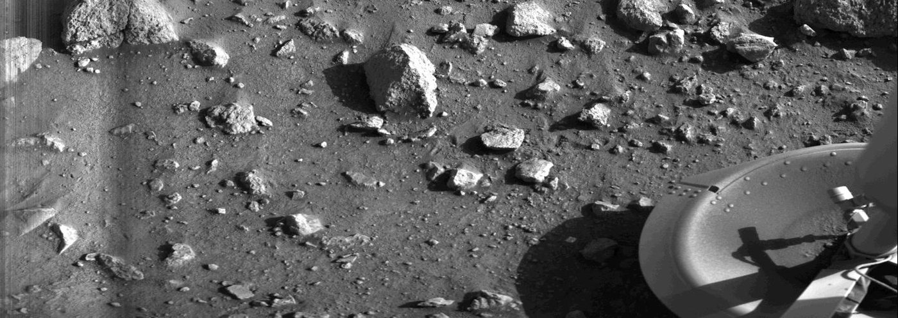
1976Viking 1
Last contact 1982
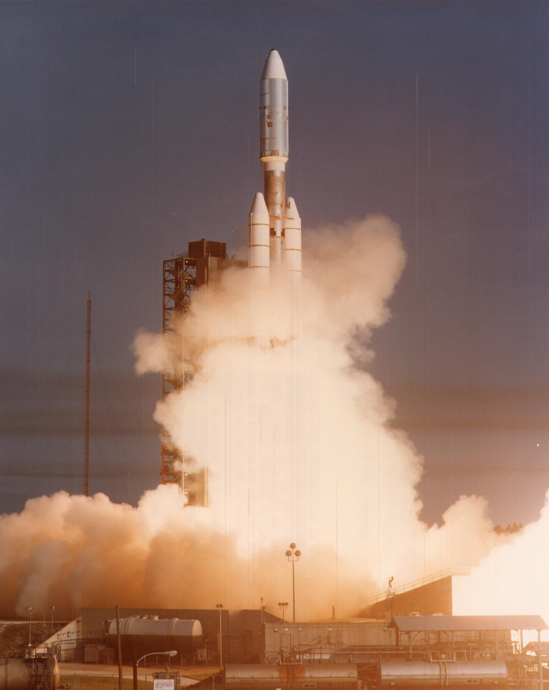
1977Voyager 1
Active
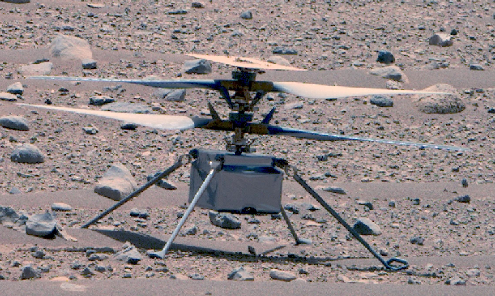
2021Ingenuity
Last flight 2024
A website where students signal real NASA hardware.
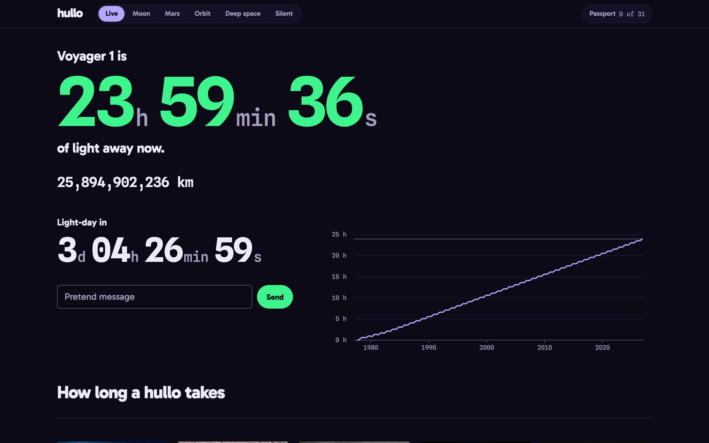
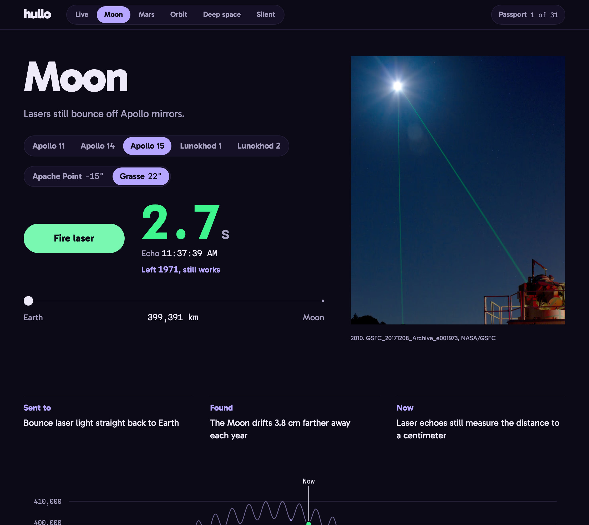
Fire a laser at an Apollo mirror
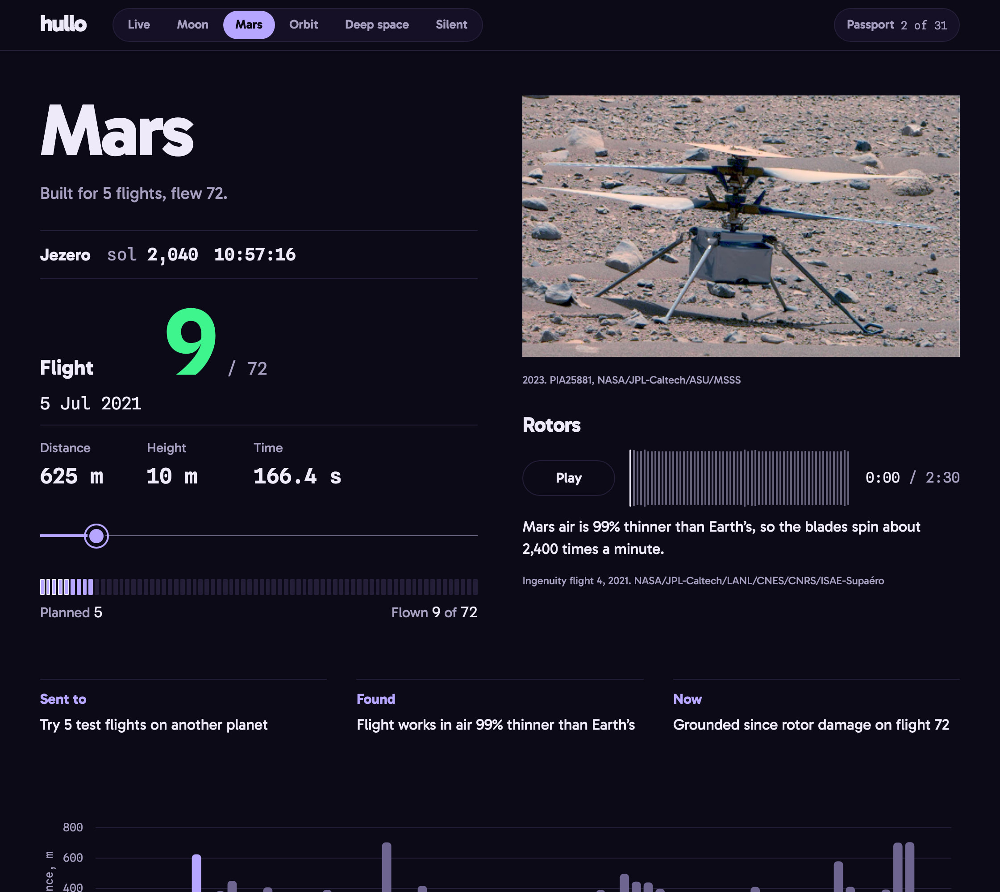
Fly all 72 Ingenuity flights
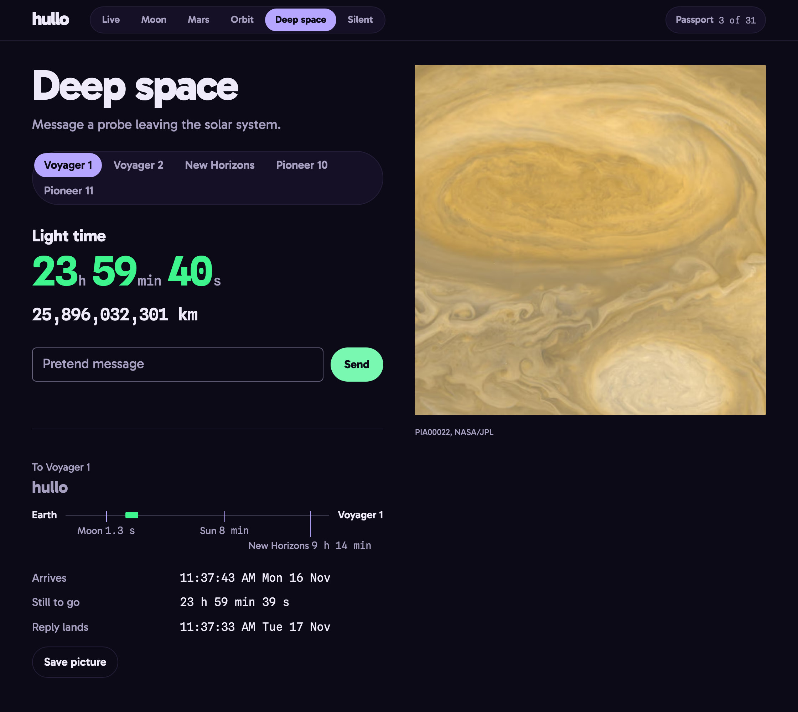
Message Voyager 1
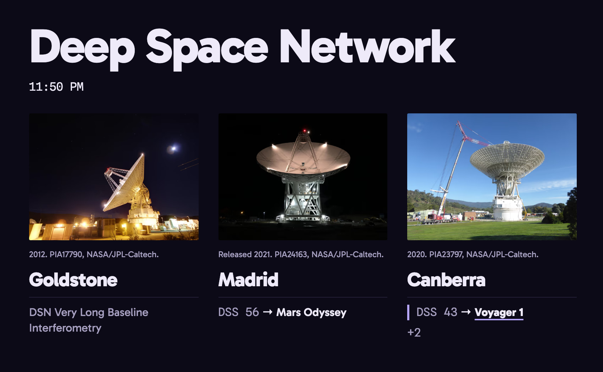
Canberra talking to Voyager 1, 14 Nov 2026
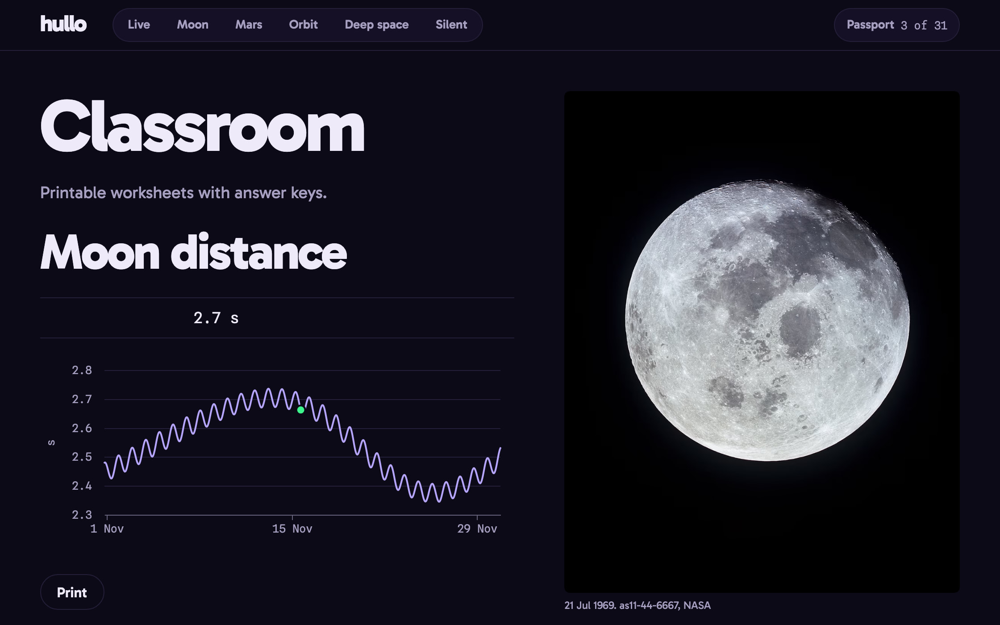
Three printable worksheets
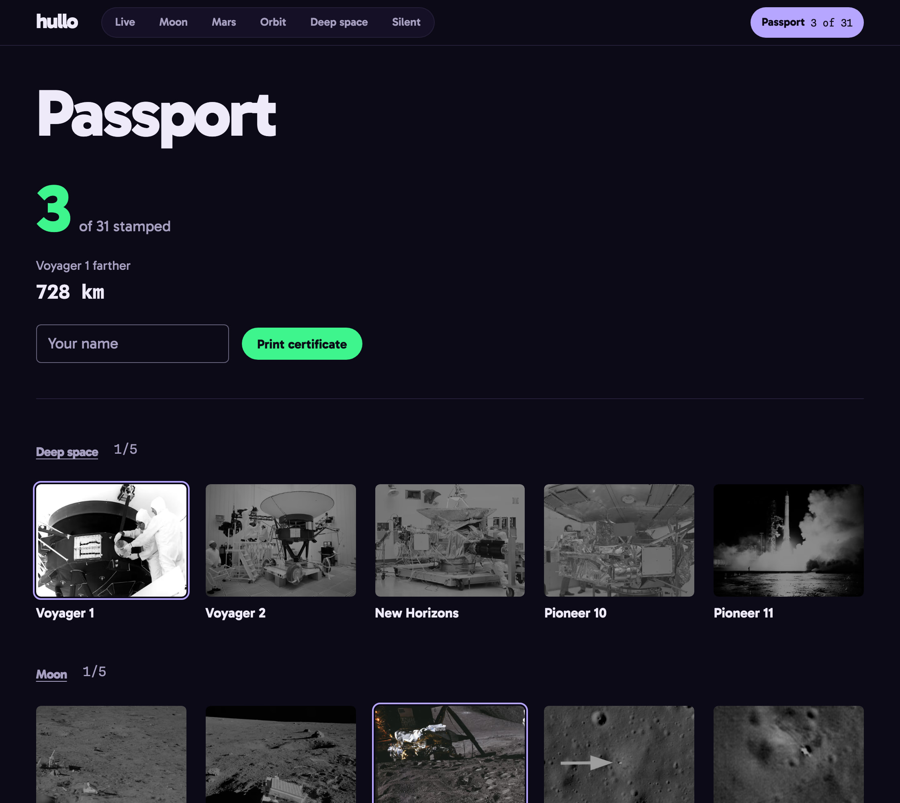
31 stamps and a certificate
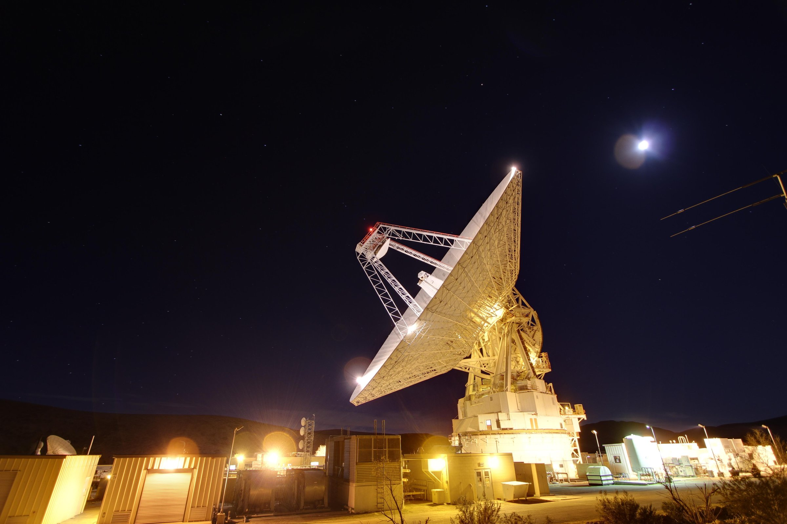